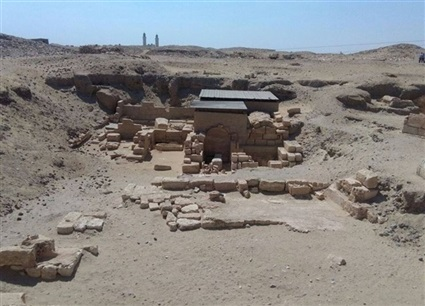
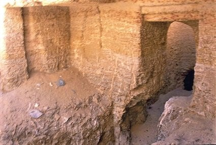

تضم جبانة من عصر الأسرة الخامسة أهمها مقبرتان إحداهما مقبرة شدو والثانية مقبرة أنتي وهما مقطوعتان في باطن الجبل وبهما نقوش تمثل الحياة اليومية والمعارك التي خاضها في حياتهم
توجد بها مقبرة كا - شدو بدشاشة مركز سمسطا : مقبرة بسيطة واجهتها منخفضة عن مقصورتها
يمكن الوصول إليها بواسطة درجات سلم الفناء
المقصورة بها صف من ثلاثة أعمدة وعمودين مربعين متصلين بالحائط تقسمها إلى قسمين
في الناحية الغربية توجد كوة كانت معدة للباب الوهمي وتحت أرضية الكوة يوجد بئر يصل إلى حجرة الدفن
في مواجهة الناحية الغربية من الكوة يوجد بها السرداب ويبدأ به ممر ضيق إلى الخارج فوق الصخر
